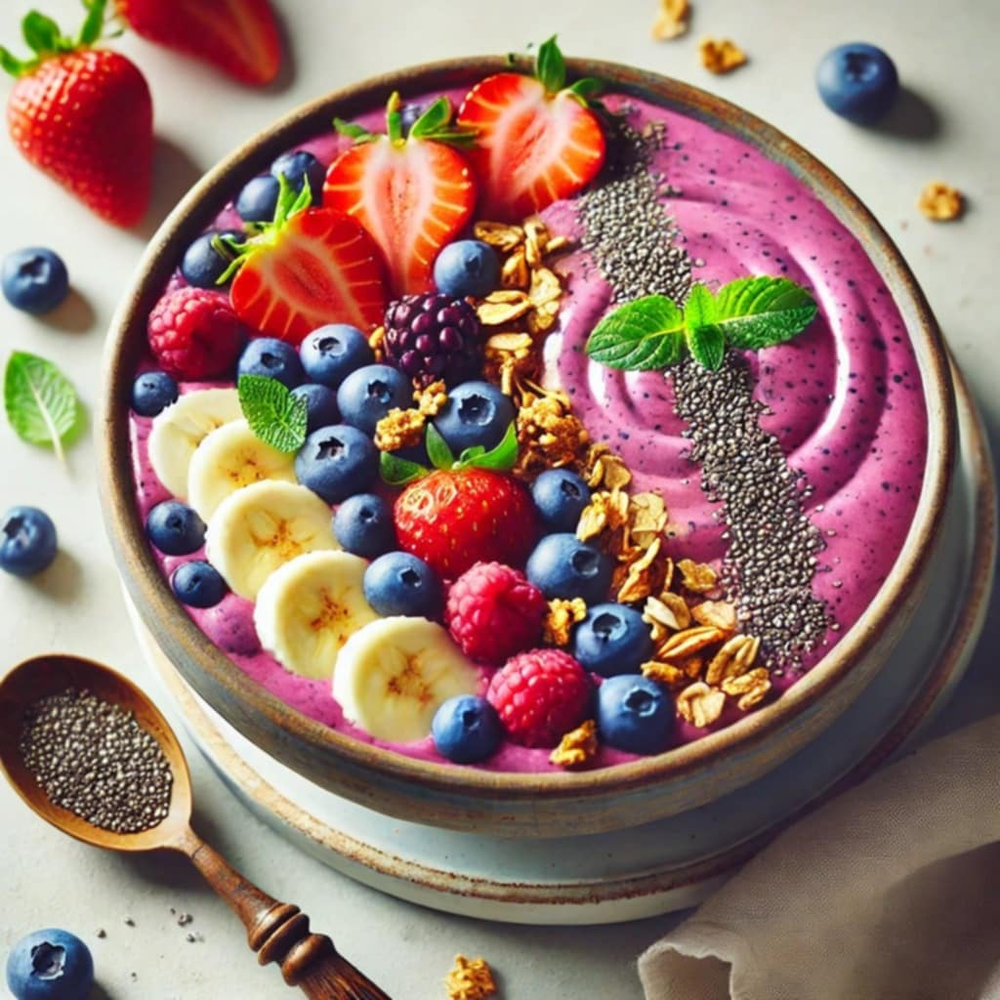

Breakfast

Smoothie Bowl
Ingredients
- 1 cup frozen berries
- 1/2 banana
- 1 cup plant-based milk
- Toppings: granola, chia seeds, sliced fruit
Instructions
- Blend berries, banana, and milk until thick.
- Pour into a bowl, and top with granola, chia seeds, and sliced fruit.
Vegan Banana Pancakes
Ingredients
- 1 ripe banana
- 1 cup oat flour (or blend oats)
- 1/2 cup almond milk
- 1 tsp baking powder
- Pinch of salt
Instructions
- Mash banana in a bowl and mix with oat flour, almond milk, baking powder, and salt
- Pour batter onto a hot skillet and cook for 2-3 minutes on each side.
- Serve with maple syrup or fresh fruit.